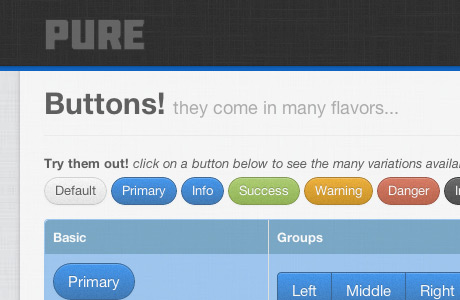
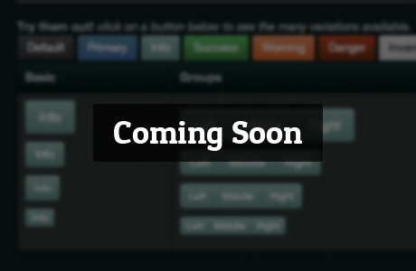

.zip file.bootstrap.css in your project with the one from the theme.img directory.Licensed under [CC BY 3.0] and free to use and download here and on GitHub.
Based on @twitter's Bootstrap (<3!).
Hosted on GitHub (free hosting FTW!)
These awesome peeps in no way endorse us.We'll keep you in the loop about new themes, and the awesome plans in the pipeline.
We also promise not to spam you with updates about our prosperous porn careers.
Follow @bootstrapinator

We love being able to quickly iterate and build concepts using bootstrap just like the rest of the world! However, we've discovered that more and more sites are starting to look the same. We know that not everyone was born with our awesome front-end design skills, so we're here to help.
Bootstrapinator is our attempt to create and provide quality themes that can easily be added to existing projects, all while maintaining the best practices provided by Bootstrap.